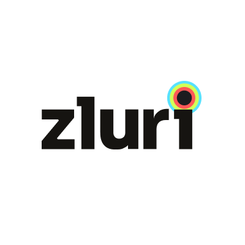

Category framing for Zluri, SaaS management that doesn't pick a lane between discovery, governance and spend. Positioned against BetterCloud, Torii, Zylo, Productiv and Lumos by collapsing their three separate buys into one workflow and one buyer.
The modern SaaS management stack is itself fragmented. IT buys discovery (BetterCloud, Torii), finance buys spend (Zylo, Lumos), HR-ops buys access (Productiv). Three contracts, three dashboards, three procurement cycles, all pointed at the same underlying sprawl.
The ironic bit, the tools meant to tame SaaS sprawl become SaaS sprawl.
Zluri's wedge is refusing the split. Visibility, governance and optimization in one spine, one buyer signs once, one workflow runs the full lifecycle from request to renewal.
Category positioning, SaaS Management as an operating layer, not a budget-line product. Changes who signs the cheque (CIO, not line-item IT manager) and what the contract is worth.
Every SaaS app, every seat, every shadow-IT tool. Discovered through finance data, SSO, browser signal, not just API connectors. The ground truth of what's actually running.
Access requests, reviews, offboarding, all in the same workflow. Audit-ready by default, SOC 2 / ISO baked in. Every permission change is a log entry, not a ticket.
Renewal calendar, usage-based right-sizing, negotiation intelligence. The CFO gets the line-item story; IT gets the decision, without a second tool or a second procurement cycle.
Running 50+ SaaS apps, growing headcount quarterly, with a CIO or Head of IT on the hook for both audit readiness and stack efficiency. Finance is watching SaaS spend line-by-line; security is watching access reviews; HR-ops is watching onboarding/offboarding SLAs. Zluri is the one vendor who speaks to all three without forcing a workflow split.
Discovery-led vendors own the IT conversation. FinOps vendors own finance. Each has a deep moat inside their lane, dashboards, integrations, buyer-specific proof.
The customer problem isn't lane-shaped. A renewal decision needs usage data (FinOps) and access data (ITAM). Buying two platforms that don't talk makes the renewal worse, not better. Zluri's wedge is refusing the split.
ITAM-first vendors (BetterCloud, Torii) own the IT conversation. FinOps-first vendors (Zylo, Productiv, Lumos) own the CFO. Both are deep in one lane, but neither owns the renewal decision, because that decision needs both usage and access data.
Zluri's wedge is the empty upper quadrant — unified spine, four personas (CIO · IT · CFO · CISO) in one dashboard. The buyer doesn't pick a lane; the lane is refused.
Every ITAM buyer demands the category baselines — discovery, compliance, reclamation. Without POP, you can't enter the room. Most vendors stop here and fight on features.
Zluri leads with the POP checklist publicly owned, then moves every downstream line to the unified-spine difference — the one claim competitors structurally can't match.
Cares about: stack efficiency as a board-level KPI, audit readiness, team productivity.
Frustrated by: vendor sprawl, renewal surprises, parallel tools for IT and finance.
Cares about: onboarding/offboarding speed, access request throughput, shadow-IT visibility.
Frustrated by: ticket queues, manual access reviews, API gaps for long-tail apps.
Cares about: SaaS spend as a line-item, utilisation-based right-sizing, forecastable renewals.
Frustrated by: rogue purchases, over-provisioned seats, surprise auto-renewals.
Cares about: SOC 2 / ISO / GDPR posture, least-privilege enforcement, deprovisioning proof.
Frustrated by: orphaned accounts, unlogged access changes, evidence-collection scramble before audits.
SaaS management as an operating layer, not a point product. Expands the buyer from IT ops to CIO-level, changes the cheque size.
Visibility · Governance · Optimization, each with its own proof lane, so sales can qualify on whichever pain opens the door.
BetterCloud, Torii on one axis; Zylo, Productiv, Lumos on the other. Zluri defined by the refusal to pick.
200-5K employee IT orgs with 50+ SaaS tools. Four-buyer-role map, CIO, IT ops, CFO, CISO, each with their own opening line.